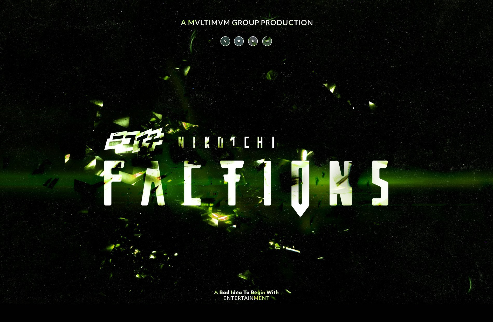
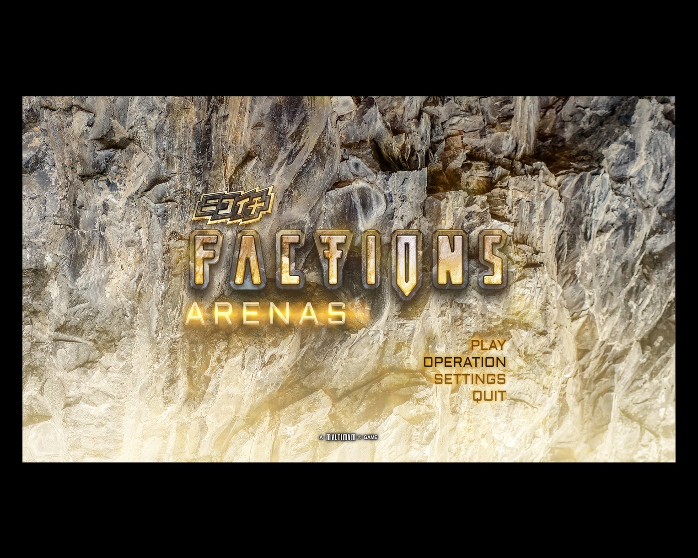

BARTHÉLÉMY VIELLE
CLVSTR
WORK
STUDIES
STONEFIELD
INFORMATION
Motion on ·
← INDEX STUDIES
CLVSTR / Recherches choisies
Factions
Univers graphique · jeu / 4 compositions
Titre et écrans pour un univers de jeu : Arenas, Continent et Frontera.

01 / 04 — Factions / composition de titre
↗︎

02 / 04 — Arenas
↗︎
03 / 04 — Continent
↗︎
04 / 04 — Frontera
↗︎
← Recherche précédente
Hshtgs
Recherche suivante ↗︎
Fathaer